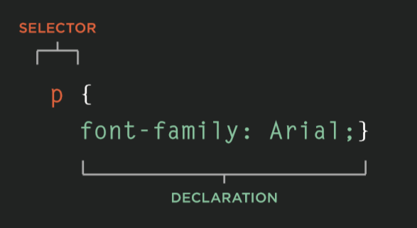
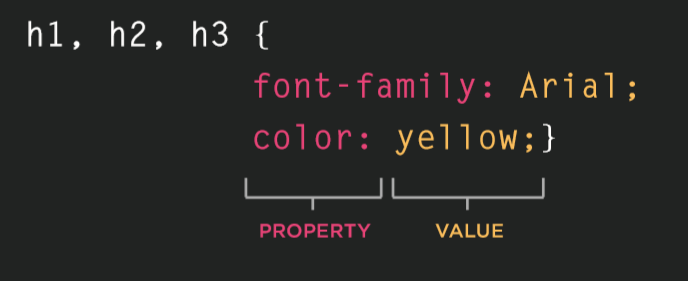
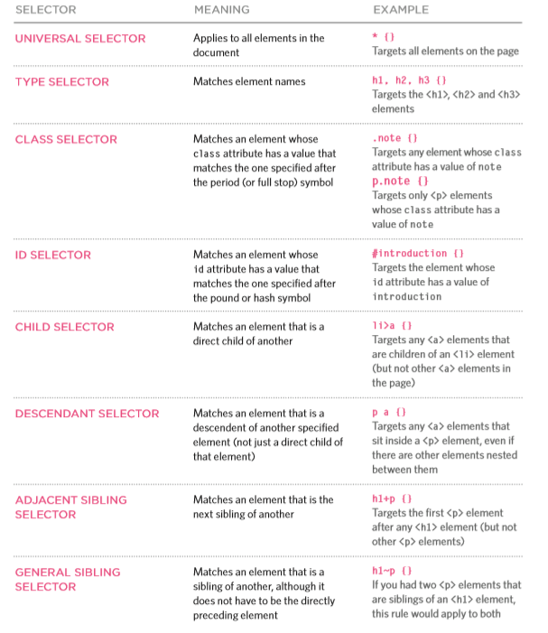
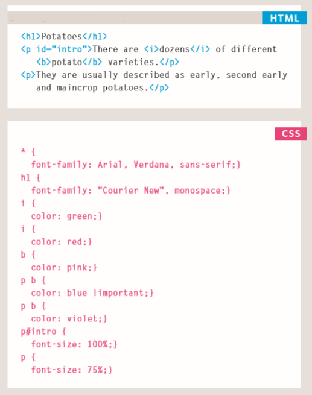

HTML5 & CSS3
CSS
Created by Jane Dimeski / @janedimeski

Lesson overview
- Introduction
- Understand the rules in CSS
- Specifying CSS styles
- Add CSS comments
Introduction
Cascading Style Sheets - CSS
- Cascading Style Sheets (CSS) - are what you use to apply style to your HTML documents
- CSS allows you to create rules that control the way that each individual element (and the contents of that element) is presented
- E.g. background of the page is cream, all paragraphs should appear in gray using the Arial font...
CSS Rules
CSS Rules
- A rule consists of a selector that specifies the element to which to apply a style and a declaration that declares which style to apply
- A declaration consists of a property and a value
- You can use many properties in CSS such as properties for positioning, sizing as well as setting element font family and colors

CSS Rules
- The selector indicates which element the rule applies to
- The same rule can apply to more than one element if you separate the element names with commas.
- The declaration indicates how the elements referred to in the selector should be styled
- Declarations sit inside curly brackets and each is split into two parts (a property and a value separated by a colon), each separated by a semi-colon.

CSS Properties
- Properties indicate the aspects of the element you want to change. For example, color, font, width, height and border
- Values specify the settings you want to use for the chosen properties. For example, red color, 100px width, and 1px border
Using CSS
Using CSS
- Two ways of using CSS:
- Internal CSS
- Inline
- Embedded
- External CSS
Using internal CSS
- You can also include CSS rules within an HTML page by placing them inside a <style> element, which usually sits inside the <head> element of the page
- The <style> element should use the type="text/css" attribute to indicate that the styles are specified in CSS
- You can also use inline css by using the style attribute on most of the elements
<style type="text/css">
body {
font-family: arial;
background-color: rgb(185,179,175);
}
h1 {
color: rgb(255,255,255);
}
</style>
<p style="color:red;"></p>
Using external CSS
- The <link> element can be used in an HTML document to tell the browser where to find the CSS file used to style the page
- The href attribute specifies the path to the CSS file
- The rel="stylesheet" specifies the relationship between the HTML page and the file it is linked to
*An HTML page can use more than one CSS stylesheet
<link href="css/style.css" rel="stylesheet" >
CSS Selectors
CSS Selectors
- There are many different types of CSS selector that allow you to target rules to specific elements in an HTML document
*CSS selectors are case sensitive
id and class atributes
*Before we start understanding CSS selectors,
we must first understand the HTML id and HTML class attributes
- Every HTML element can have an id attribute. *id should be unique to one element
-
Every HTML element can have more than one
class attribute. *class shouldn’t be unique and can be used to group set of elements by class (group)
<p id="text-01" class="blue-background" > ... </p>
<p id="text-02" class="blue-background" > ... </p>

How css rules cascade?
*If there are two or more rules that apply to the same element,
it is important to understand which will take precedence.
- Last rule If the two selectors are identical, the latter of the two will take precedence.
- Specificity If one selector is more specific than the others, the more specific rule will take precedence over more general ones.
- Important You can add !important after any property value to indicate that it should be considered more important than other rules that apply to the same element.

Inheritance
*Inheritance also needs to be understood in this context
-
Some CSS property values set on parent elements are inherited by their child elements, and some aren't.
*For example, if you set a color and font-family on an element, every element inside it will also be styled with that color and font, unless you've applied different color and font values directly to them. -
Some properties do not inherit — for example, if you set a width of 50% on an element,
all of its descendants do not get a width of 50% of their parent's width.
*If this was the case, CSS would be very frustrating to use!

You can read more on the subject about
CSS selectors on
this link here.
You can read more on this subject about
cascading and inheritance on
this link here.